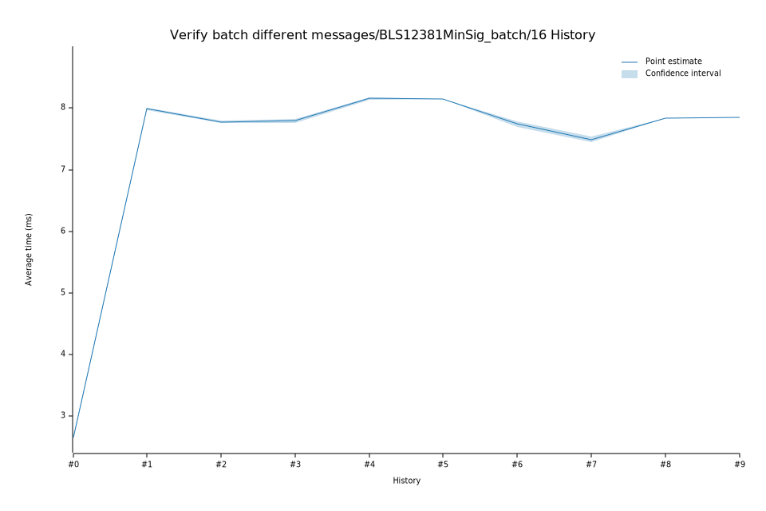

# 52023-02-13T20:44:31Z
|
Lower Bound |
Estimate |
Upper Bound |
| Value: |
8.15ms |
8.15ms |
8.15ms |
| Change in Value: |
-0.3630% |
-0.2292% |
-0.0411% |
No change in performance detected.
# 42023-02-09T12:51:32Z
|
Lower Bound |
Estimate |
Upper Bound |
| Value: |
8.13ms |
8.16ms |
8.18ms |
| Change in Value: |
+4.7090% |
+5.1682% |
+5.6108% |
No change in performance detected.
# 32023-02-08T18:59:31Z
|
Lower Bound |
Estimate |
Upper Bound |
| Value: |
7.77ms |
7.80ms |
7.83ms |
| Change in Value: |
-0.3286% |
+0.1055% |
+0.5723% |
Change within noise threshold.
# 22022-12-05T08:47:56Z
|
Lower Bound |
Estimate |
Upper Bound |
| Value: |
7.76ms |
7.78ms |
7.80ms |
| Change in Value: |
-3.0982% |
-2.8501% |
-2.5951% |
No change in performance detected.
# 12022-11-14T12:01:49Z
|
Lower Bound |
Estimate |
Upper Bound |
| Value: |
7.97ms |
7.99ms |
8.00ms |
| Change in Value: |
+197.77% |
+199.99% |
+202.16% |
No change in performance detected.
# 02022-11-04T13:40:01Z
|
Lower Bound |
Estimate |
Upper Bound |
| Value: |
2.64ms |
2.66ms |
2.68ms |